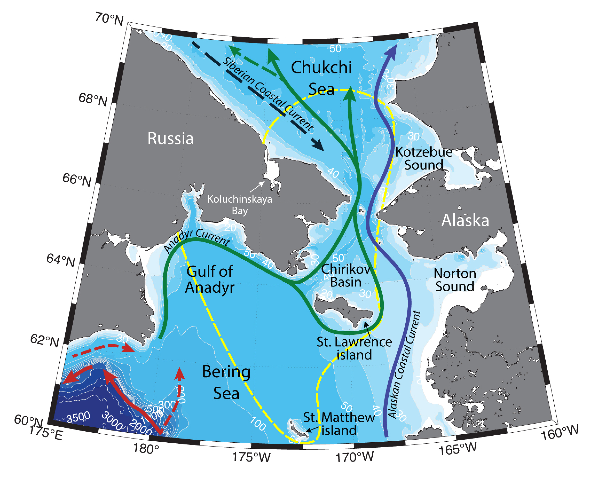

Schematic water circulation patterns and geographical place names in the Northern Bering Sea and Southern Chukchi Sea. Adopted from Pisareva et al. (2015a,b), Pickart et al. (2016), Baker et al. (2020). Dashed line marks the studied region.
Northern Bering Shelf is a key region for Pacific water transformation, before the flow proceeds northwards through the narrow bottle neck of Bering Strait into the Arctic Ocean. Several water masses involved in the northwards flow are known to exist in the region: Anadyr water, Bering Shelf water, Alaskan Coastal water. Hydrography of the region is determined by the characteristics of the inflowing water masses, seasonal sea ice cover, upwellings, etc.
Various studies have previously suggested, that Anadyr Current is a continuation of the Bering Slope Current (BSC), which was thought to turn northwards onto the shelf in the region of Navarin Cape (Coachman et al., 1975; Kinder et al., 1986). Combined O18 isotope and salinity analysis have shown the relation of Anadyr waters both to high salinity Bering Slope Current and to fresh coastal waters (Coachman, Shigaev, 1992) – Anadyr river inflows into the north Bering Sea and supplies around 65 km3/year annually. Later research based on numerical modeling (Clement Kinney et al., 2009) has suggested that BSC is following the bathymetry and doesn’t flow up onto the shelf. It seems, that Anadyr current feeds on the waters from the shelf current, which almost disappear during winter, but have transport of about 1 Sv during summertime (Hu, Wang, 2010).
Anadyr Current is flowing northwards along the coast of Anadyr Gulf. Its mean speed is 15-20 cm/s, which means, that the residence time of the current in the Gulf is about 1 month (Coachman, Shigaev, 1992). In the Chirikov basin current can reach speeds up to 34 cm/s (which makes the residence time of these waters in the Basin about 9 days).
In the region of Anadyr Strait 20-30 % of the Anadyr Current turn around the St. Lawrence Island and proceed northwards through the Shpanberg Strait, while the 70-80% continue through Anadyr Strait (Danielson et al., 2012a). To the south of St. Lawrence Island, the current direction can change from eastern to southern. The flow through Bering, Shpanberg and Anadyr straits is northwards, however the currents often reverse during wintertime. Anadyr Current, as well as its flow through Anadyr Strait are less prone to variability under wind forcing, compared to the flow through Shpanberg and Bering Straits (Aagaard et al., 1985a). During wintertime the current in Bering Strait is 10-20cm/s, in Anadyr Strait – 15-30 cm/s (Muench et al., 1988). Danielson with coauthors (2012b) have modeled and described two modes of circulation in the northern Bering Sea: 0.6 Sv of a northward flow through the Shpanberg Strait and almost 0 Sv in Anadyr Strait under the influence of south-easterly winds and 0.64 Sv of a northward flow through the Anadyr Strait with a southerly transport of 0.5 Sv under the influence of north-westerly winds. Numerical models for 1987-2007 have shown, that 50% of the time mean monthly flow through the Anadyr Strait was greater than through the Bering Strait.
During summertime in the western part of the Chirikov Basin upwellings of Anadyr waters from the near-bottom horizon are common (e.g. Coachman, Shigaev, 1992; Whitledge et al., 1992; Hansell et al., 1989; Nihoul et al., 1993; Stabeno et al., 1999). Wind-driven upwellings have also been observed by St. Lawrence and St. Matthew islands. It has been studied (Saitoh et al., 1998), that northwesterly winds along St. Lawrence and St. Matthew islands drive upwelling at their southern coasts, while southeasterly winds can cause coastal upwelling along their northern coasts. Upwellings of nutrients to the surface cause phytoplankton blooms and boost the productivity of the ecosystem.
Bering strait is the only oceanic gateway between the Pacific and the Arctic. The strait is ~85 km wide and ~50 m deep and consists of two channels, divided by Diomede Islands. The mean flow through the Bering Strait is northward; it influences the entire Chukchi Sea and subsequently Arctic Basin, by bringing heat, salt, freshwater, nutrients, and zooplankton (e.g. Grebmeier et al., 2006; Woodgate et al., 2012).
The flow through the Bering Strait is driven by the Pacific-Arctic pressure head, and has increased from documented ~0.7 Sv (in 2001) to ~1.2 Sv (in 2014; as quantified for the mooring, positioned to the north of Diomede Islands, which to some degree can represent a useful average of the flow through the strait; Woodgate et al., 2012, 2015, 2018). In summer and fall the transport through Bering Strait is higher, reaching 1.4 Sv in July; during December it is ~ 0.3 Sv (Stabeno et al., 1999). Flow reversals are more common during wintertime, however can sometimes happen under the influence of anomalously strong wind forcing (Pisareva et al., 2015b). The current speed can exceed 1.5 m/s (Pisareva et al., 2015b).
The hydrography of Bering Strait is dictated by the water masses passing through. Due to shallow topography of the Bering Strait region and Chukchi shelf, seasonal presence of ice and atmospheric forcing, the T/S (temperature-salinity) characteristics of these water masses vary both on temporal and spatial scales. Hence, biological metrics (such as zooplankton communities) are often used to distinguish the water masses in the Bering Strait and Chukchi Sea (e.g. Pisareva et al., 2015a).
The water masses passing through the Bering Strait are following topographically steered pathways into the Arctic Basin. The northward flow divides into three branches: one flows northwestward through Herald Canyon, another is advected through Central Channel, while the third flow follows Alaskan coast into the Barrow Canyon.
On the Alaskan side of the Bering Strait during summertime narrow (~10-20km) surface-intensified Alaskan Coastal Current (ACC) carries warm and fresh (T > 3°C, S < 32.5; Pisareva et al., 2015a,b) Alaskan Coastal Water (ACW). It originates from the river runoff into the Gulf of Alaska and is further fueled by the Kuskokwim river discharge (38 km3/year annualy, or from 170-450 m3/s in winter to 2000-11000 m3/s in May-June) into the Bristol Bay and Yukon into the North Bering Sea (202-210 km3/year annualy, or from 900-1500 m3/s in winter to 13000-33000 m3/s in May-June; Aagaard et al., 2006; Dürr et al. 2011). ACC can sometimes occupy the entire water column of the Bering Strait (e.g. Paquette and Bourke, 1974). Sometimes anomalously strong northerly winds can cause the Ekman transport of the ACC offshore from its usual pathway along the US coast all the way to the western part of the strait (towards Russian coast). At this time Bering Sea Water creates a compensating near bottom flow on the eastern part of the strait (close to the US coast). Such transposition has happened, for example, in September 2009 (Pisareva et al., 2015a).
Two other branches carry Summer Bering Sea Water during summertime and Pacific Winter Water during wintertime. Summer Bering Sea Water (BSW; T =∼ 0−3°C, S =∼ 32−33; also known as Western Chukchi Summer Water (Shimada et al., 2001) or Chukchi Summer Water (von Appen & Pickart, 2012)) is a product of transformation of nutrient-rich Anadyr Water (S > 32.8) and colder and fresher Bering Shelf Water (S = ~31.5 – 32.8; Coachman et al., 1975). These waters mix to some degree north of Bering Strait and are rich in nutrients.
During wintertime convective overturning waters are transformed so that their temperature is close to freezing. This water mass is known as Pacific Winter Water (WW; T < ~-1. 6°C, also known as Newly Ventilated Pacific Winter Water). WW can also be formed and further transformed locally on the Chukchi Shelf. Brine rejection during ice formation causes WW become saltier than 34 – this water is usually named Hypersaline Winter Water (HSWW). In spring and summer solar heating and/or mixing with summer waters modify the WW into a product called Remnant Winter Water (RWW; T =∼ −1.6 − 0°C, S >∼ 31.5 – 34), which temperature is no longer near the freezing point.
Apart from the three mentioned branches of Pacific origin waters on the Chukchi Shelf, there have also been an evidence of another pathway through the Long Strait. BSW may be advected westwards into the East Siberian Sea (Weingartner et al., 1998; Woodgate et al., 2005b), but this pathway has not been established as a permanent branch. Waters that enter Koluchinskaya Bay (BSW, WW, or Siberian Coastal Current) can stay there longer than in the outer parts of the shelf, and emanate from the bay later, influencing the water column.
Quasi-permanent Siberian Coastal Current (SCC) flows along Russian coast from the East-Siberian Sea through Long Strait eastward towards Bering Strait. It originates from the river runoff into the Siberian seas and carries fresh and cold waters (𝑆 < 30). Two modes of SCC are distinguished: a vast current with a broad (~60 km) front under the influence of upwelling-favorable winds and a narrow deep current under the influence of downwelling-favorable winds. However, due to the lack of direct measurements (due to harsh conditions, seasonal presence of sea ice, and the political border between Russia and US), SCC still needs more investigation. It is thought to have quasi-permanent nature, as it didn't appear in the southwestern part of the Chukchi Shelf during a number of oceanographic surveys (e.g. 2004 August, fall 1995). (Weingartner et al., 1999; Pisareva et al., 2015a,b). The current can carry large amounts of sea ice towards the Bering Strait. It can be distinguished not only by its TS (temperature-salinity) characteristics, but also by the zooplankton communities, that it carries.
SCC is thought to be diverted offshore to some degree north from the Bering Strait due to convergence and mixing with the northward flow through Bering Strait. However, there has been a few evidences of SCC to the south of Bering Strait. That usually happened late in the season (late fall and winter) under the influence of strong northerly winds (Weingartner et al., 1999).
Bering Strait is typically covered with ice from late December to May. While the rapid loss of sea ice has been observed since 2004, this trend wasn't necessarily true for the Bering Strait region and southern part of the Chukchi shelf. Although the changing pattern of sea ice retreat has exposed new ocean areas to increased solar heating, it has also opened the ocean to the atmospheric forcing, which resulted in an increase in environmental variability. The amount of sea-ice persisting on the Chukchi Shelf and in the northern Bering Sea largely depends not only on the heat flow through the strait, but also on the regional wind field (e.g. Wood et al., 2015b; Serreze et al., 2016). As such, for example, the calm conditions in 2012 resulted in the unusual amount of sea ice through summer around Wrangel Island and Long Strait (Pisareva et al., 2015b; Wood et al., 2015b), even while a new record was set for low sea ice extent in the Arctic. In winter 2013, on the other hand, a series of strong storms which passed over central Alaska in combination with anomalously high pressure over the central Arctic and enhanced Beaufort Gyre resulted in a large fracture that initially formed to the north of Point Hope and spread rapidly to encompass the entire area from Bering Strait to the eastern Beaufort Sea, and which led to an anomalous low ice-concentration winter event and the rapid export of sea ice into the Bering Sea (Wood et al., 2015a).
Northern part of the Bering Sea is annually ice covered for at least 100 days (Frey et al., 2015). In the Gulf of Anadyr and in the Chirikov Basin ice concentration can be up to 50% in May (Wang et al., 2009). In wintertime under the influence of strong north-easterly winds large polynyas can form along the northern shore of Anadyr Gulf and to the south of St. Lawrence Island and next to St. Matthew Island (Cavalieri, Martin, 1994; Schumacher et al., 1983). Brine rejection in the St. Lawrence Polynya together with nutrient-rich Anadyr Current generate baroclinic currents that positively influence benthic communities (e.g. Grebmeier, Cooper, 1995).
Biological “hotspots” in the Northern Bering – to the south of St. Lawrence Island, in the Chirikov Basin, in the Southern Chukchi Sea have been included as original sites of Distributed Biological Observatory (DBO) program (Moore, Grebmeier, 2018). These spots exhibit high productivity, biodiversity, elevated nutrient concentrations, high benthic biomass, concentration of marine mammals and seabirds (Hill and Cota, 2005; Grebmeier et al., 2015).